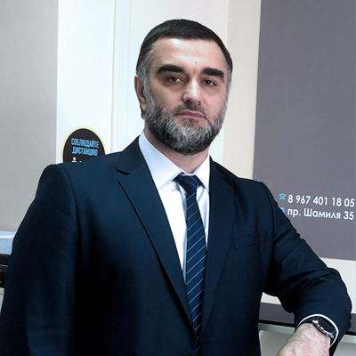
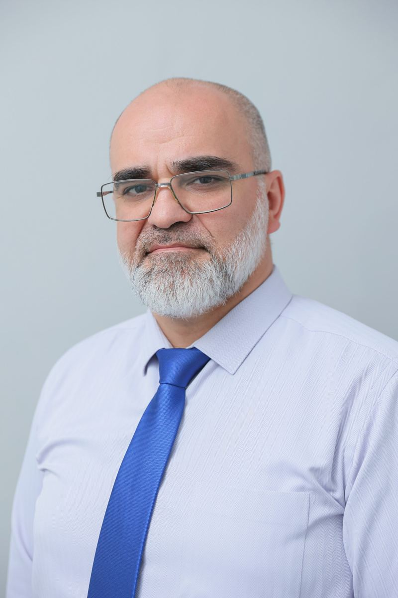
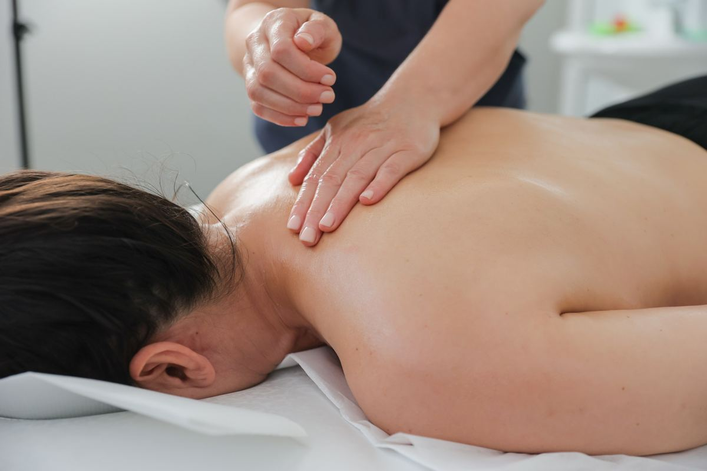
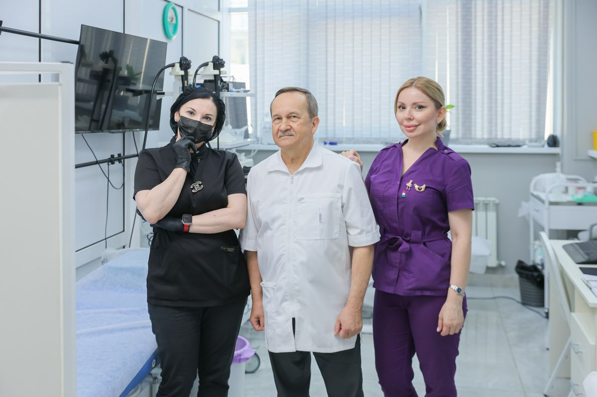

Магомеддов Абдулла-Гаджи Абумуслимович
Основатель проекта «Орто-Рекавери»
нужно от клиники
2–3 фразы: почему открыли центр и чем он отличается.
О центре

2–3 фразы: почему открыли центр и чем он отличается.

Обращение к пациентам — коротко, от первого лица.
Как лечим

Нам доверяют
Применяем методы, доказавшие свою эффективность и безопасность.
Зарегистрированное медицинское учреждение с необходимыми лицензиями.
Осторожный подход: только безоперационные методы восстановления.
В сложных случаях вас посмотрят несколько специалистов центра, чтобы поставить точный диагноз.
Первый этаж, вход без ступенек, парковка у входа.
Бесплатно — чтобы визит к врачу был спокойнее.
Экскурсия






Истории пациентов
2–3 случая: жалобы, что сделали, что изменилось. Только с письменного согласия пациента.
2–3 коротких видео: пациент своими словами, 30–60 секунд.
Средняя оценка боли по шкале 0–10 в начале и в конце курса. Без данных клиники не пишем.
Пример концепции. Фото врачей, процедур и кабинетов — центра (фотосессия 2024 со старого сайта); фото на первом экране, «Стопа», «Реабилитация» и борьба — Unsplash. Цены — прайс клиники.